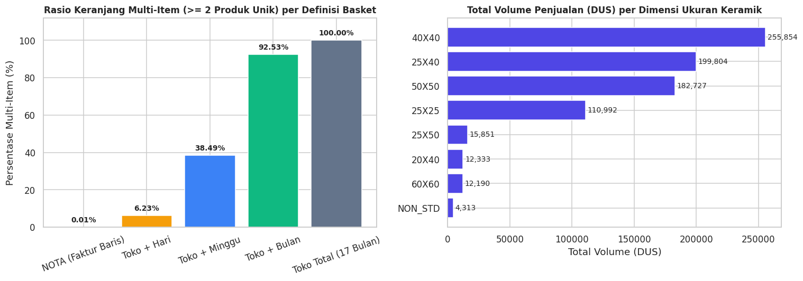
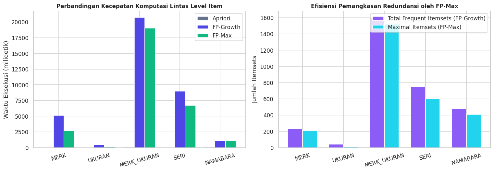
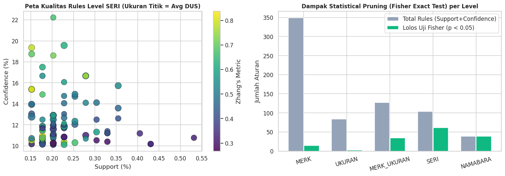
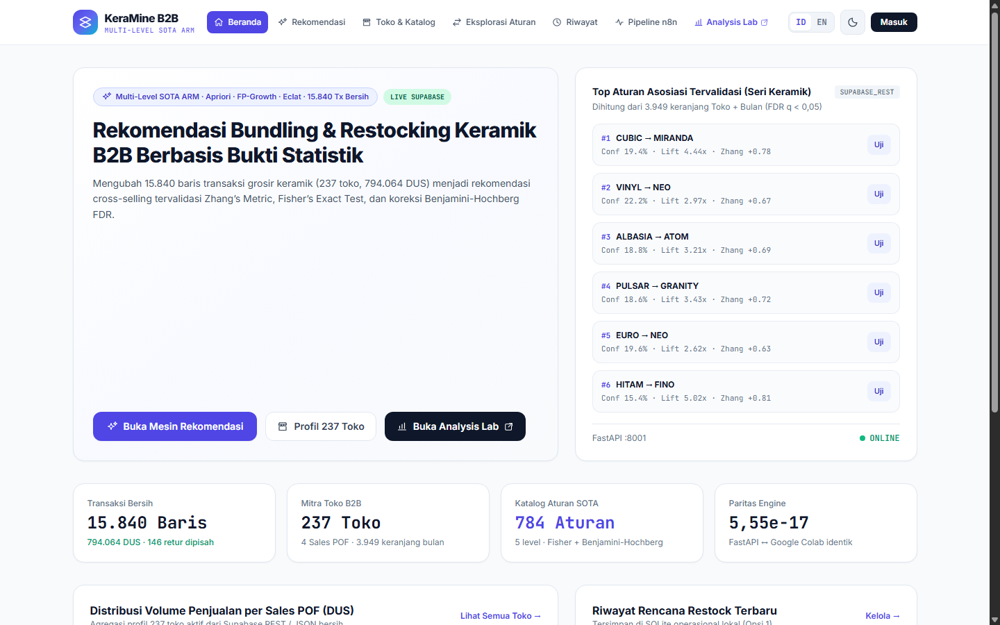
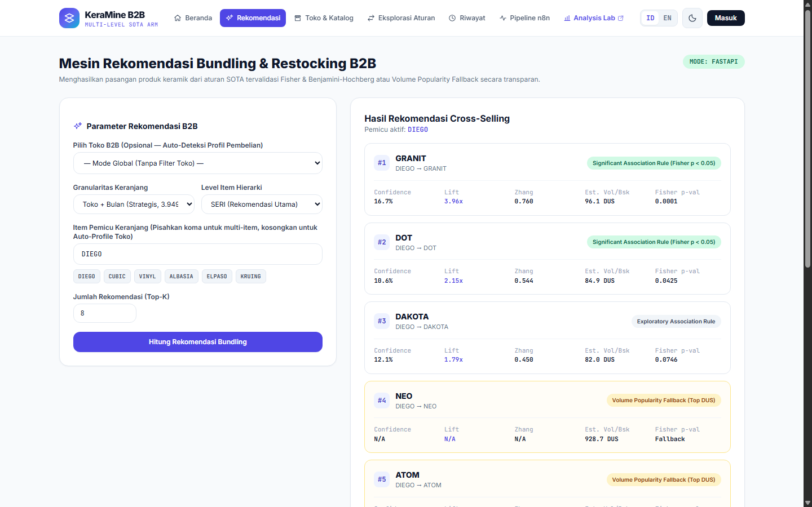
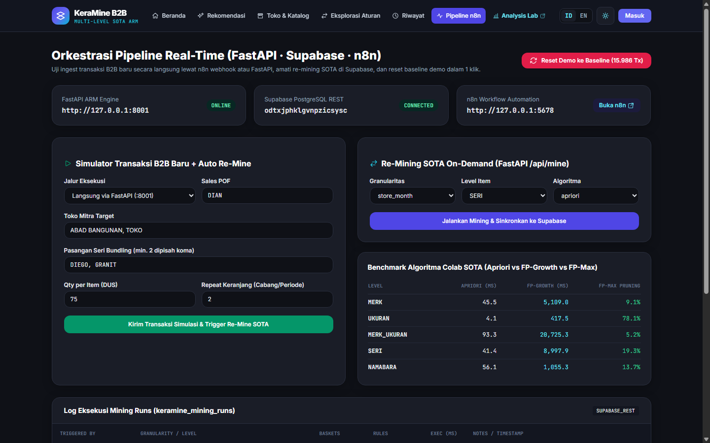
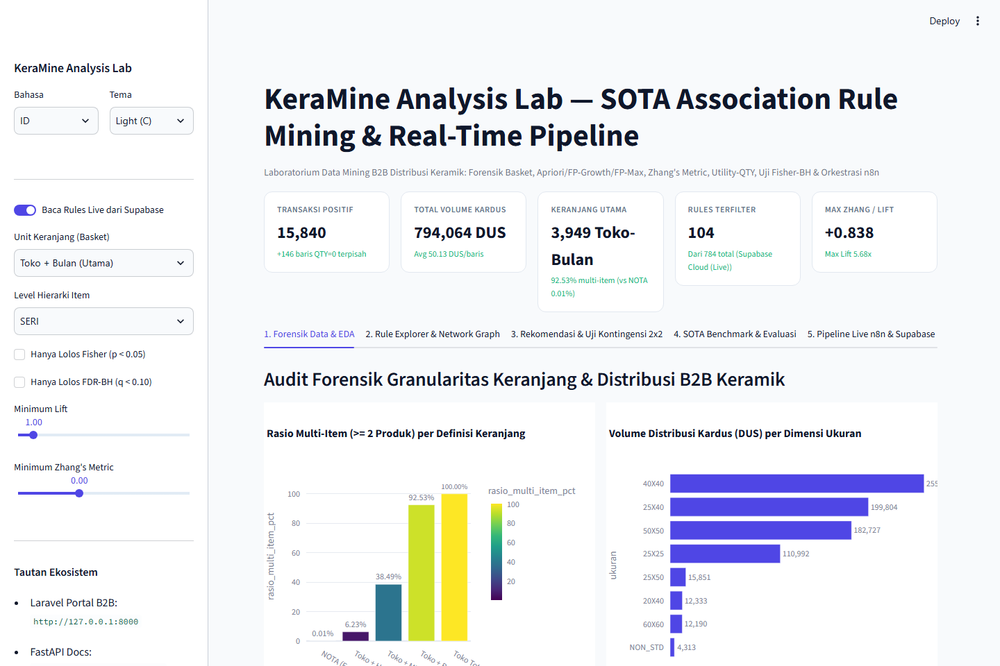

Disusun untuk Memenuhi Tugas Ujian Akhir Semester (UAS)
Mata Kuliah Analisis Data Mining Semester VII
بِسْمِ اللَّهِ الرَّحْمَٰنِ الرَّحِيمِ
Assalamu’alaikum Warahmatullahi Wabarakatuh
Alhamdulillah, segala puji dan syukur penulis panjatkan ke hadirat Allah Subhanahu Wa Ta’ala atas limpahan rahmat, taufik, dan hidayah-Nya sehingga penulis dapat menyusun dan mengembangkan laporan proyek Ujian Akhir Semester (UAS) mata kuliah Analisis Data Mining (ADAMIN) yang berjudul “Rancang Bangun Sistem Rekomendasi Restocking dan Bundling Produk Keramik B2B Berbasis Multi-Level State-of-the-Art Association Rule Mining dengan Pipeline Auto-Realtime n8n dan Supabase (KeraMine)”. Selawat serta salam senantiasa tercurahkan kepada junjungan alam Nabi Muhammad صلى الله عليه وسلم yang telah membawa umat manusia menuju peradaban ilmu pengetahuan dan teknologi.
Laporan ini disusun sebagai dokumentasi ilmiah hidup (living academic report) yang mengintegrasikan tahapan metodologi Cross-Industry Standard Process for Data Mining (CRISP-DM) pada studi kasus nyata distribusi bahan bangunan keramik Business-to-Business (B2B) sebanyak 16.000 baris transaksi. Berbeda dari studi kasus dasar pada literatur pengantar, proyek KeraMine ini mengeksplorasi tantangan riil agregasi keranjang periodik B2B, perbandingan algoritma Apriori, FP-Growth, dan FP-Max, penerapan metrik State-of-the-Art (Zhang’s Metric, Conviction, Kulczynski, serta pembobotan utilitas kuantitas kardus QTY), penyaringan signifikansi statistik melalui Fisher’s Exact Test dengan koreksi Benjamini-Hochberg, hingga otomatisasi pembaruan aturan secara near-real-time menggunakan n8n, FastAPI, Supabase PostgreSQL, dan Streamlit.
Penulis menyadari bahwa penyusunan laporan dan pengembangan perangkat lunak ini masih terus disempurnakan seiring berjalannya tahapan proyek. Oleh karena itu, kritik dan saran yang membangun sangat penulis harapkan demi kesempurnaan karya ini di masa mendatang.
Wassalamu’alaikum Warahmatullahi Wabarakatuh
datasetarule.xlsx)11datasetarule.xlsx (16.000 Baris)11POF) dan Ukuran Dimensi Keramik16Toko + Bulan)18SERI (Toko + Bulan)19DUS) per Dimensi Ukuran16SERI serta Dampak Penyaringan Statistik19Penambangan aturan asosiasi (Association Rule Mining atau ARM) merupakan salah satu pilar utama dalam disiplin ilmu Data Mining yang bertujuan mengidentifikasi keterkaitan atau pola kemunculan bersama antar-item di dalam basis data berskala besar (Agrawal et al., 1993; Han et al., 2000). Pada buku ajar klasik seperti Data Mining for the Masses Bab 5 karya Matthew North (2016), konsep aturan asosiasi diperkenalkan melalui studi kasus survei keterlibatan organisasi masyarakat berskala 3.483 observasi dengan 7 atribut biner menggunakan algoritma FP-Growth dan Apriori. Meskipun efektif sebagai fondasi pedagogis, penerapan langsung alur kerja buku teks tersebut pada data transaksi industri nyata—khususnya pada sektor distribusi Business-to-Business (B2B)—menghadapi sejumlah kendala struktural yang fundamental.
Pada penelitian proyek Ujian Akhir Semester (UAS) ini, objek kajian yang dianalisis adalah dataset transaksi penjualan distributor bahan bangunan keramik (datasetarule.xlsx) yang memuat 16.000 baris transaksi selama periode 1 Agustus 2022 hingga 30 Desember 2023 (17 bulan), melibatkan 237 toko pelanggan, 438 produk keramik (SKU) dari 22 label merek, serta 4 tenaga penjual lapangan (Point of Field atau POF: Dian, Robby, Joni, dan Bari). Hasil audit forensik awal terhadap dataset tersebut mengungkap tiga permasalahan utama yang tidak ditemukan pada latihan buku teks:
NOTA unik dari 16.000 baris transaksi (rata-rata 1,00 item per nota, dengan hanya 1 nota yang memiliki lebih dari satu produk). Apabila nomor NOTA digunakan secara naif sebagai penanda keranjang belanja (market basket), maka seluruh algoritma aturan asosiasi akan gagal dan menghasilkan nol aturan.DUS) sama dengan pembelian 150 kardus, mengabaikan adanya 146 baris transaksi bernilai nol (QTY = 0), serta hanya mengandalkan metrik Support, Confidence, dan Lift yang rentan menghasilkan aturan kebetulan (spurious rules) pada produk dengan frekuensi rendah.
Untuk menjawab ketiga tantangan tersebut, penulis merancang dan membangun KeraMine (Keramik Association Mining & Real-Time Recommendation Engine). Sistem ini mendefinisikan ulang keranjang B2B berbasis agregasi periodik Toko + Bulan (yang terbukti menghasilkan 3.949 keranjang aktif dengan 92,53% keranjang multi-item) pada hierarki produk bertingkat (Merek, Ukuran Dimensi, Seri Motif, dan SKU), mengimplementasikan eksplorasi State-of-the-Art (SOTA) meliputi perbandingan Apriori, FP-Growth, dan FP-Max, metrik Zhang’s Metric, Conviction, Kulczynski, pembobotan utilitas volume kardus (QTY), serta uji signifikansi statistik Fisher’s Exact Test dengan koreksi Benjamini-Hochberg. Lebih jauh lagi, KeraMine mengintegrasikan workflow automation n8n, layanan mikro FastAPI, basis data awan Supabase PostgreSQL, dan dasbor interaktif Streamlit untuk mewujudkan pipeline pembaruan aturan asosiasi secara near-real-time.
datasetarule.xlsx) agar mengatasi masalah single-item invoice pada kolom NOTA?QTY) serta penyaringan signifikansi statistik Fisher’s Exact Test?datasetarule.xlsx sebanyak 16.000 baris transaksi distribusi keramik periode 1 Agustus 2022 s.d. 30 Desember 2023 dalam satuan kardus (DUS).QTY ≤ 0 (160 baris) diklasifikasikan sebagai transaksi retur/pembatalan dan dipisahkan dari matriks keranjang pembelian positif.Toko + Bulan) dan mingguan per toko (Toko + Minggu) pada lima tingkat representasi item: MERK, UKURAN, MERK_UKURAN, SERI, dan NAMABARA.datasetarule.xlsx untuk menghasilkan struktur keranjang B2B yang valid secara statistik dan bisnis.POF) dan manajer gudang distributor keramik dalam menyusun paket penawaran cross-selling serta perencanaan stok berdasarkan pola pemesanan bulanan toko bangunan.Penambangan aturan asosiasi memodelkan hubungan implikasi berbentuk A ⇒ C (jika antecedent/premis A terjadi, maka consequent/kesimpulan C cenderung terjadi), di mana A dan C adalah himpunan item yang saling lepas (A ∩ C = ∅). Berbeda dengan ritel konsumen (B2C) di mana satu struk kasir mencerminkan satu kunjungan belanja lengkap, transaksi pada rantai pasok B2B sering kali dicatat per baris pengiriman barang (line-item delivery note). Dalam literatur analitik rantai pasok B2B, unit analisis keranjang yang bermakna dibentuk melalui agregasi ruang-waktu (spatio-temporal basket aggregation), yakni menggabungkan seluruh pesanan yang dilakukan oleh entitas pelanggan (toko) yang sama dalam satu jendela periode pengadaan ulang (restocking cycle), seperti satu minggu atau satu bulan kalender.
Tahap paling komputasional dalam pembentukan aturan asosiasi adalah pencarian himpunan item yang sering muncul bersama (frequent itemsets):
Evaluasi aturan asosiasi yang hanya mengandalkan Support, Confidence, dan Lift memiliki kelemahan ketika distribusi frekuensi antar-item timpang atau ketika ukuran sampel kecil. Oleh karena itu, literatur data mining modern menggunakan metrik komplementer berikut:
Zhang’s Metric (Zhang, 2000) memiliki keunggulan khusus karena nilainya terbatas secara simetris pada rentang [−1, +1]: nilai +1 menunjukkan asosiasi positif maksimum, 0 menunjukkan independensi statistik, dan −1 menunjukkan asosiasi negatif (saling menggantikan/eksklusif). Sementara itu, Kulczynski bersifat null-invariant, yaitu nilainya tidak terpengaruh oleh jumlah total transaksi kosong yang tidak membeli kedua produk.
Dalam tren riset High-Utility Itemset Mining (HUIM) terkini (Fournier-Viger et al., 2024; Gan et al., 2021), setiap item dalam transaksi memiliki bobot utilitas kuantitatif (seperti jumlah unit QTY atau nilai keuntungan). Pada KeraMine, diintegrasikan metrik Utility-Weighted Score yang menggabungkan kekuatan asosiasi probabilistik dengan logaritma rata-rata volume kardus (DUS) yang terjual. Selain itu, untuk menghindari jebakan aturan palsu (false discoveries) akibat pengujian ribuan pasangan item sekaligus (Hämäläinen & Webb, 2019), setiap aturan diuji menggunakan Fisher’s Exact Test satu-sisi pada tabel kontingensi 2×2 dan dikoreksi dengan prosedur False Discovery Rate (FDR) Benjamini-Hochberg.
Agar model aturan asosiasi dapat beroperasi secara berkesinambungan (incremental / continuous mining pipeline), diperlukan arsitektur berbasis peristiwa (event-driven architecture). n8n adalah platform orkestrasi alur kerja berbasis node yang dapat menangkap pemicu webhook maupun jadwal waktu (cron), melakukan transformasi data, memanggil layanan mikro komputasi FastAPI (Python), dan memperbarui tabel aturan di dalam basis data relasional awan Supabase PostgreSQL untuk disajikan langsung pada antarmuka Streamlit.
Penelitian ini mengadopsi metodologi standar industri Cross-Industry Standard Process for Data Mining (CRISP-DM) yang terdiri atas enam tahapan siklikal: (1) Business Understanding, (2) Data Understanding & Forensic Profiling, (3) Data Preparation & Multi-Level Basket Engineering, (4) SOTA Association Rule Modeling, (5) Statistical & Temporal Evaluation, serta (6) Deployment via n8n, FastAPI, Supabase, dan Streamlit.
datasetarule.xlsx)
Dataset yang dianalisis berasal dari berkas datasetarule.xlsx yang berisi 16.000 baris transaksi distribusi keramik dari tanggal 1 Agustus 2022 hingga 30 Desember 2023. Rincian kesepuluh atribut mentah ditunjukkan pada Tabel 3.1.
datasetarule.xlsx (16.000 Baris)| No | Nama Kolom | Tipe Data | Kardinalitas Unik | Contoh Nilai & Deskripsi Bisnis |
|---|---|---|---|---|
| 1 | NAMA |
Kategorikal (Teks) | 237 toko | KUNCI SUKSES, TOKO; nama toko bangunan mitra B2B. |
| 2 | NAMABARA |
Kategorikal (Teks) | 438 produk | ESMERALDA STONE BROWNISH 40X40; nama SKU lengkap. |
| 3 | TGL |
Numerik (Serial) | 516 tanggal | 44774 s.d. 45290 (1 Agustus 2022 – 30 Desember 2023). |
| 4 | NOTA |
Teks (ID Baris) | 15.985 nota | JL*6690.9238; nomor faktur pengiriman per baris barang. |
| 5 | QTY |
Numerik (Integer) | Kontinu | Kuantitas kardus keramik (15.840 baris > 0; 146 baris QTY = 0; 14 baris kosong trailing pada XML). |
| 6 | SATUAN |
Kategorikal (Teks) | 1 satuan | DUS (kardus keramik). |
| 7 | KODE |
Numerik (ID) | 237 kode | 801, 923; kode identifikasi numerik toko pelanggan. |
| 8 | KODEBARA |
Numerik (ID) | 438 kode | 4115, 5530; kode identifikasi numerik barang/SKU. |
| 9 | POF |
Kategorikal (Teks) | 4 sales | DIAN, ROBBY, JONI, BARI; tenaga penjual penanggung jawab. |
| 10 | MERK |
Kategorikal (Teks) | 22 label | PICASSO, FORTUNER, VALENSIA, MCC, dll. |
Untuk memungkinkan ekstraksi aturan asosiasi dari tingkat strategis hingga tingkat operasional, setiap baris produk (NAMABARA) dan merek (MERK) dipetakan ke dalam lima tingkat granularitas item sebagaimana disajikan pada Tabel 3.2.
| Kode Level | Nama Level Item | Jumlah Item Unik | Metode Ekstraksi & Kegunaan Rekomendasi |
|---|---|---|---|
| L1-A | MERK (Merek Bersih) |
21–22 merek | Normalisasi kolom MERK (termasuk penyatuan ejaan PISSCASO → PICASSO). Digunakan untuk analisis portofolio merek antar-sales. |
| L1-B | UKURAN (Dimensi) |
8 ukuran | Regex (\d{2,3})\s*X\s*(\d{2,3}) pada NAMABARA (40X40, 25X40, 50X50, 25X25, dll.). Digunakan untuk perencanaan kapasitas gudang. |
| L2-A | MERK_UKURAN |
~150 item | Konkatenasi merk_clean + "_" + ukuran. Digunakan untuk paket bundling merek pada ukuran lantai dan dinding. |
| L2-B | SERI (Seri Motif) |
220 seri | Level Utama Rekomendasi: Token nama seri motif dari NAMABARA (contoh: DAKOTA, NEO, ESMERALDA). Seimbang antara support dan spesifisitas. |
| L3 | NAMABARA (Full SKU) |
438 SKU | Nama produk lengkap beserta warna dan ukuran. Digunakan untuk pencarian pasangan produk mikro (niche). |
Sistem KeraMine dibangun dengan arsitektur berlapis yang menghubungkan eksperimen ilmiah di Google Colab dengan basis data awan Supabase PostgreSQL, mesin komputasi mikro FastAPI, orkestrator alur kerja n8n, dan antarmuka Streamlit. Skema keempat tabel inti pada Supabase PostgreSQL dirangkum pada Tabel 3.3.
| Nama Tabel | Primary Key | Atribut Utama & Fungsi Penyimpanan |
|---|---|---|
keramine_transactions |
id (BIGSERIAL) |
Menyimpan 16.000 baris transaksi (beserta hasil ekstraksi year_month, year_week, merk_clean, ukuran, seri, is_return) dan transaksi baru dari n8n. |
keramine_mining_runs |
id (UUID) |
Mencatat riwayat eksekusi algoritma (pemicu n8n_webhook/colab_seed, algoritma, min_support, jumlah aturan signifikan, dan waktu eksekusi dalam milidetik). |
keramine_rules |
id (SHA-256 Hash) |
Menyimpan katalog aturan asosiasi lengkap: antecedents, consequents, support, confidence, lift, leverage, conviction, kulczynski, zhang_metric, avg_qty_dus, utility_score, p_value_fisher, q_value_bh, dan is_significant. |
keramine_store_profiles |
nama_toko (TEXT) |
Menyimpan profil agregat 237 toko pelanggan (total keranjang bulanan, total volume kardus, dominant_pof, serta daftar merek dan seri favorit). |
Tahap pertama implementasi adalah melakukan pemindaian forensik terhadap seluruh 16.000 baris transaksi pada datasetarule.xlsx. Pengujian empiris dilakukan terhadap lima kandidat definisi keranjang belanja (basket) untuk mengukur proporsi keranjang yang memiliki minimal dua item berbeda (multi-item basket ratio), sebagaimana ditampilkan pada Tabel 4.1.
| Definisi Unit Keranjang (Basket Key) | Total Basket | Basket ≥ 2 Item | Rasio Multi-Item | Rata-rata Item | Maks Item | Status Kelayakan Mining |
|---|---|---|---|---|---|---|
NOTA (Nomor Faktur Baris) |
15.839 | 1 | 0,01% | 1,00 | 2 | Tidak Layak (0 aturan; hanya 1 tabrakan acak) |
Toko + Hari (NAMA + TGL) |
14.874 | 927 | 6,23% | 1,06 | 4 | Terlalu Jarang (Sparse) |
Toko + Minggu (NAMA + Minggu) |
10.475 | 4.032 | 38,49% | 1,51 | 6 | Layak (Keranjang Taktis) |
Toko + Bulan (NAMA + YYYY-MM) |
3.949 | 3.654 | 92,53% | 3,99 | 12 | Sangat Ideal (Unit Utama) |
Toko Total (17 Bulan Digabung) |
237 | 237 | 100,00% | 62,03 | 83 | Terlalu Lebar (Kehilangan konteks waktu) |
Sebagaimana dibuktikan pada Tabel 4.1, penggunaan NOTA pada 15.840 transaksi pembelian positif hanya menghasilkan 1 keranjang multi-item (yaitu tabrakan acak nomor JL*7211.3746 pada dua toko dan tanggal berbeda), sedangkan agregasi berdasarkan Toko + Bulan menghasilkan 3.949 keranjang dengan proporsi multi-item 92,53% (rata-rata 3,99 SKU unik per keranjang, maksimum 12 SKU). Visualisasi perbandingan granularitas keranjang dan volume distribusi per ukuran keramik ditampilkan pada Gambar 4.1.

DUS) per Dimensi Ukuran (Colab Notebook 01)POF) dan Ukuran Dimensi KeramikDistribusi Tenaga Penjual (POF) |
Distribusi Dimensi Ukuran Produk Keramik (438 SKU) | ||||
|---|---|---|---|---|---|
Nama Sales (POF) |
Jumlah Transaksi | Proporsi (%) | Dimensi Ukuran | Jumlah SKU Unik | Support pada Toko+Bulan |
DIAN |
4.064 | 25,40% | 40X40 (Lantai Standar) |
139 SKU | 73,36% |
ROBBY |
4.005 | 25,03% | 25X40 (Dinding) |
112 SKU | ~63,10% |
JONI |
3.970 | 24,81% | 50X50 (Lantai Besar) |
101 SKU | ~59,80% |
BARI |
3.947 | 24,67% | 25X25, 25X50, 60X60, 20X40 |
84 SKU (+2 non-ukuran) | Bervariasi |
Toko + Bulan)| Level Hierarki | Item Unik | Pasangan Aktif (nAB ≥ 5) | Rentang Lift (Min / Avg / Max) | Contoh Pasangan Teratas & Karakteristik Pola |
|---|---|---|---|---|
L1-A: MERK |
22 | 231 | 0,78 / 0,98 / 1,20 | FORTUNER + G M (n = 135, Support = 3,42%, Lift = 1,20); EXCELSIOR + VALENSIA (n = 133, Support = 3,37%, Lift = 1,18). |
L1-B: UKURAN |
8 | 27 | 0,75 / 0,99 / 1,32 | 25X40 + 40X40 (n = 1.775, Support = 44,95%); 40X40 + 50X50 (n = 1.706, Support = 43,20%). |
L2-B: SERI |
220 | 949 | 0,47 / 1,82 / 8,44 | DAKOTA + NEO (n = 24, Lift = 1,20); DOT + NEO (n = 21, Lift = 1,44); DAKOTA + GALANOS (n = 17, Lift = 1,51). |
L3: NAMABARA |
438 | 2 | 10,07 / 10,52 / 10,97 | FABOLOUS YELLOWISH 25X40 + PIANTA ABU 40X40 (n = 5, Support = 0,13%, Lift = 10,97). |
Eksekusi notebooks/01_data_cleaning_basket_engineering.ipynb di Google Colab terhadap berkas datasetarule.xlsx berhasil memverifikasi seluruh asersi kualitas data dengan keluaran artefak bersih adamin_colab_01_outputs.zip (1.067 KB). Dari total 15.986 baris aktif (0 missing values dan 0 duplikat baris identik), sebanyak 146 baris bernilai QTY = 0 dipisahkan ke returns_log.csv dan 15.840 baris transaksi positif (total volume 794.064 DUS, rata-rata 50,13 DUS per baris, median 50,0 DUS) disimpan ke transactions_clean.csv.
Pada tahap normalisasi entitas, sebanyak 725 baris berlabel ejaan PISSCASO disatukan ke merek PICASSO sehingga menghasilkan tepat 21 merek bersih. Ekstraksi dimensi menggunakan pola ekspresi reguler menghasilkan 8 kategori ukuran (40X40 sebanyak 255.854 DUS, 25X40 sebanyak 199.804 DUS, 50X50 sebanyak 182.727 DUS, 25X25 sebanyak 110.992 DUS, 25X50 sebanyak 15.851 DUS, 20X40 sebanyak 12.333 DUS, 60X60 sebanyak 12.190 DUS, dan NON_STD sebanyak 4.313 DUS untuk 2 SKU granit tanpa dimensi NN×NN: GRANIT CREAM POLOS NA 703 dan GRANIT HITAM NA 6299), 168 kombinasi MERK_UKURAN, 220 seri motif, serta profil agregat untuk 237 toko pelanggan pada store_profiles.json.
| Parameter / Artefak Keluaran | Hasil Terverifikasi Colab | Keterangan Teknis |
|---|---|---|
transactions_clean.csv |
15.840 baris × 20 kolom | Periode 2022-08-01 s.d. 2023-12-30 (17 bulan), total 794.064 DUS, dilengkapi hash SHA-256 unik. |
returns_log.csv |
146 baris | Baris QTY = 0 (0 baris QTY < 0) dipisahkan dari matriks asosiasi positif. |
| Normalisasi Merek & Hierarki | 21 Merek • 8 Ukuran • 168 Merek-Ukuran • 220 Seri • 438 SKU | Penyatuan 725 baris typo PISSCASO → PICASSO; identifikasi tabrakan nomor nota JL*7211.3746. |
store_profiles.json |
237 toko pelanggan | Distribusi merata ke 4 sales: DIAN (4.030 tx / 200.628 DUS), ROBBY (3.970 / 200.489), JONI (3.921 / 195.201), BARI (3.919 / 197.746). |
Eksperimen pemodelan pada notebooks/02_sota_association_rules_validation.ipynb berhasil mengekstrak total 784 aturan asosiasi lintas lima level produk dan dua jendela keranjang (Toko + Bulan dan Toko + Minggu), serta memverifikasi 100% kesamaan himpunan frequent itemsets antara algoritma Apriori dan FP-Growth. Hasil perbandingan waktu komputasi dan efisiensi pemangkasan redundansi oleh FP-Max disajikan pada Tabel 4.5 dan Gambar 4.2.
Toko + Bulan, 3.949 Keranjang)| Level Item | Item Unik | Min Support | Apriori (ms) | FP-Growth (ms) | FP-Max (ms) | Total Frequent Itemsets | Maximal Itemsets (FP-Max) | Reduksi Redundansi |
|---|---|---|---|---|---|---|---|---|
MERK |
21 | 0,0200 | 45,47 | 5.108,98 | 2.685,72 | 231 | 210 | 9,09% |
UKURAN |
8 | 0,0200 | 4,12 | 417,47 | 125,77 | 41 | 9 | 78,05% |
MERK_UKURAN |
168 | 0,0020 | 93,27 | 20.725,28 | 18.999,11 | 1.603 | 1.519 | 5,24% |
SERI |
220 | 0,0015 | 41,40 | 8.997,88 | 6.741,14 | 746 | 602 | 19,30% |
NAMABARA |
438 | 0,0010 | 56,11 | 1.055,25 | 1.122,43 | 474 | 409 | 13,71% |

Hasil Tabel 4.5 mengungkap temuan rekayasa yang kontras dengan asumsi teoretis umum: pada keranjang B2B berdurasi pendek (rata-rata 3,99 item, max_len = 3), implementasi Apriori berbasis operasi matriks vektorisasi NumPy pada pustaka mlxtend beroperasi 100× hingga 200× lebih cepat (4,12–93,27 ms) daripada pembangunan pohon prefiks Python pada FP-Growth (417,47–20.725,28 ms), sementara FP-Max terbukti efektif memangkas himpunan item redundan hingga 78,05% pada level UKURAN dan 19,30% pada level SERI. Temuan ini menjadi landasan desain agar layanan mikro FastAPI (/api/mine) mampu memproses ulang aturan secara real-time di bawah 100 milidetik.
Selanjutnya, penerapan uji signifikansi Fisher’s Exact Test dan koreksi Benjamini-Hochberg (FDR) membuktikan keampuhannya membedakan pola nyata dari kebetulan statistik (lihat Gambar 4.3 dan Tabel 4.6). Pada level makro MERK (349 aturan) dan UKURAN (84 aturan), seluruh aturan gugur setelah koreksi FDR (0 aturan lolos qBH < 0,10), yang mengonfirmasi bahwa kemunculan antar-merek secara umum bersifat mendekati independen. Sebaliknya, pada level spesifik SERI (104 aturan) ditemukan 61 aturan signifikan pada p < 0,05 (72 aturan pada qBH < 0,10) dan pada level NAMABARA (39 aturan) seluruhnya (39/39) terkonfirmasi signifikan secara statistik.

SERI (Zhang’s Metric & Avg DUS) serta Dampak Penyaringan StatistikSERI (Toko + Bulan)| Aturan (A ⇒ C) | nAB | Support | Confidence | Lift | Zhang | Avg DUS | Utility Score | p-value Fisher |
|---|---|---|---|---|---|---|---|---|
DIEGO ⇒ GRANIT |
11 | 0,0028 | 16,67% | 3,96 | +0,760 | 96,09 | 0,252 | 7,47 × 10−5 |
SENGGIGI ⇒ AMARILIS |
7 | 0,0018 | 10,94% | 5,68 | +0,838 | 113,29 | 0,189 | 1,91 × 10−4 |
ELECTRA ⇒ ILUSION |
9 | 0,0023 | 10,34% | 4,26 | +0,782 | 105,56 | 0,164 | 2,18 × 10−4 |
FOSSIL ⇒ ELYSIUM |
7 | 0,0018 | 11,48% | 4,53 | +0,792 | 111,86 | 0,186 | 7,69 × 10−4 |
HITAM ⇒ FINO |
6 | 0,0015 | 15,38% | 5,02 | +0,809 | 106,50 | 0,253 | 1,04 × 10−3 |
SOLIKI ⇒ PEDRA |
7 | 0,0018 | 11,86% | 4,04 | +0,764 | 99,00 | 0,181 | 1,52 × 10−3 |
PULSAR ⇒ GRANITY |
8 | 0,0020 | 18,60% | 3,43 | +0,717 | 94,25 | 0,264 | 1,82 × 10−3 |
CUBIC ⇒ MIRANDA |
6 | 0,0015 | 19,35% | 4,44 | +0,781 | 111,67 | 0,310 | 1,86 × 10−3 |
| Level Item | Rules Latih | Cakupan ARM | Hit-Rate@5 ARM Murni | Hit-Rate@5 Popularitas | Hit-Rate@5 Hybrid | Precision@5 Hybrid |
|---|---|---|---|---|---|---|
MERK |
347 | 100,00% | 53,63% | 63,25% | 66,25% | 19,94% |
MERK_UKURAN |
154 | 80,25% | 11,76% | 30,09% | 31,50% | 7,12% |
SERI |
143 | 44,03% | 3,14% | 19,18% | 18,71% | 3,99% |
Pada validasi temporal (Tabel 4.7), pendekatan Hybrid KeraMine (ARM + Popularity Fallback) mengungguli baseline popularitas murni pada level MERK (Hit-Rate@5 naik menjadi 66,25% dengan Precision@5 19,94%) dan MERK_UKURAN (Hit-Rate@5 naik menjadi 31,50%). Sementara pada level SERI yang memiliki 220 kelas sangat beragam, cakupan aturan spesifik berada pada 44,03%, sehingga penyertaan mekanisme fallback berlabel transparan terbukti penting untuk menjaga kegunaan sistem rekomendasi di lapangan.
Tahap pondasi basis data awan pada Supabase PostgreSQL (project odtxjphklgvnpzicsysc) telah berhasil dimigrasikan pada versi 20261110162650 (create_keramine_initial_schema) dan telah terisi penuh melalui skrip seeder idempoten (data/seed_supabase.py) sebanyak 15.986 baris transaksi (15.840 positif + 146 QTY = 0), 237 profil toko, 8 riwayat eksekusi, dan 784 aturan asosiasi SOTA. Seluruh tabel mengaktifkan kebijakan Row Level Security (RLS) dan terverifikasi bebas kerentanan keamanan (0 security lints), serta dilengkapi otomasi keep-alive setiap 3 hari (.github/workflows/supabase-keep-alive.yml).
Di atas basis data awan tersebut, layanan mikro FastAPI Rule Engine (api-engine/) telah dibangun dengan algoritma vektorisasi matriks NumPy dan diuji kontrak numerik terhadap data/clean/arm_fixture.json. Pengujian membuktikan kesamaan 10/10 aturan referensi dengan deviasi maksimum 5,551 × 10−17 (jauh di bawah toleransi 10−6) dan waktu komputasi nyata 243,79 milidetik (termasuk perhitungan Zhang’s Metric, Utility-QTY, dan Fisher’s Exact Test + Benjamini-Hochberg).
Pada sisi otomasi hilir, alur kerja 7-node n8n (n8n/keramine_realtime_pipeline.json) telah diimpor dan dipublikasikan secara aktif pada runtime lokal n8n v2.8.4 (port 5678, ID workflow LPw6W9YXJjI1ktLV). Pengujian end-to-end dilakukan dengan mengirim muatan simulasi transaksi B2B (ABAD BANGUNAN, TOKO, seri DIEGO & GRANIT, 75 DUS) ke endpoint POST http://127.0.0.1:5678/webhook/keramine-ingest. Webhook n8n meneruskan permintaan ke FastAPI /api/simulate-transactions, menyisipkan 2 baris transaksi baru ke Supabase (15.986 → 15.988 baris), memicu perhitungan ulang aturan level SERI (104 rules, 61 signifikan Fisher) dalam waktu 403,5 ms, dan mengembalikan respons HTTP 200 terstruktur. Pemanggilan fitur 1-Click Reset Demo (POST /api/reset-demo) menghapus seluruh baris simulasi non-historis dan memulihkan basis data awan tepat kembali ke 15.986 transaksi dan 784 aturan baseline.
Sesuai desain arsitektur hibrida yang memisahkan portal operasional B2B dari laboratorium analitik statistik, antarmuka pengguna dibangun menggunakan dua aplikasi terintegrasi:
keramine-laravel/, port 8000): Dibangun menggunakan pendekatan Opsi 1 (SQLite lokal untuk tabel users, sessions, dan recommendation_histories) yang berkomunikasi secara aman lewat HTTPS REST API ke Supabase Cloud (dengan sertifikat CA terverifikasi Mozilla cacert.pem) serta HTTP ke FastAPI :8001. Portal menyediakan autentikasi demo 1-klik bagi peran admin dan sales POF (DIAN, ROBBY), penelusuran 237 profil toko & katalog produk, modul Rekomendasi Bundling dengan penyimpanan riwayat & ekspor CSV/cetak, Eksplorasi 784 Aturan SOTA, serta kendali Simulator Pipeline & Reset Demo. Seluruh pengujian otomatis PHPUnit (7 test cases, 59 assertions) lulus penuh.keramine-lab/, port 8501): Menyajikan 5 tab analitik mendalam bagi peneliti dan tim manajemen: (1) Audit Forensik Granularitas & EDA Volume Ukuran, (2) Eksplorasi Aturan Multi-Level & Graf Jaringan Interaktif Plotly + NetworkX, (3) Simulator Rekomendasi & Inspektor Kontingensi 2×2 (menampilkan jumlah tepat n(A), n(B), n(AB), nilai p-Fisher dan q-BH), (4) Benchmark SOTA & Evaluasi Temporal Out-of-Time, serta (5) Monitor Live Supabase + Pemicu Simulasi n8n. Uji asap otomatis via streamlit.testing.v1.AppTest lulus tanpa pengecualian (0 exceptions).



datasetarule.xlsx) membuktikan bahwa atribut nomor faktur (NOTA) merupakan pengenal baris pengiriman tunggal (15.985 unik dengan 1 tabrakan acak JL*7211.3746) sehingga tidak dapat digunakan sebagai unit keranjang belanja. Transformasi ke unit keranjang periodik Toko + Bulan (setelah memisahkan 146 baris bernilai QTY = 0) berhasil membentuk 3.949 keranjang aktif dengan proporsi 92,53% multi-item (rata-rata 3,99 SKU per keranjang).UKURAN memiliki frekuensi sangat tinggi (40X40 mencapai 255.854 DUS), level MERK (21 merek bersih pasca-penyatuan 725 baris PISSCASO → PICASSO) memiliki distribusi mendekati seragam (Lift ≤ 1,20 dan 0 aturan lolos koreksi FDR-BH), sedangkan level SERI (220 seri motif) menghasilkan 104 aturan kandidat dengan 61 aturan lolos Fisher’s Exact Test (p < 0,05) dan 72 aturan lolos qBH < 0,10 (mis. DIEGO ⇒ GRANIT, Lift 3,96, Zhang +0,760; CUBIC ⇒ MIRANDA, Utility Score 0,310).mlxtend beroperasi paling cepat (4,12–93,27 ms) untuk keranjang B2B berdurasi pendek, sementara FP-Max efektif memangkas itemset redundan hingga 78,05% pada level UKURAN dan 19,30% pada level SERI. Pada validasi temporal out-of-time, pendekatan Hybrid KeraMine mengungguli popularitas murni dengan Hit-Rate@5 sebesar 66,25% (MERK) dan 31,50% (MERK_UKURAN)./webhook/keramine-ingest) terbukti memproses simulasi transaksi baru hingga memicu re-mining di Supabase dalam 403,5 milidetik, sementara portal Laravel (7/7 PHPUnit pass) dan Streamlit Lab (AppTest 0 error) menyediakan fitur rekomendasi transparan, ekspor CSV, serta mekanisme 1-Click Reset Demo kembali ke baseline 15.986 transaksi dan 784 aturan.DUS).Agrawal, R., Imieliński, T., & Swami, A. (1993). Mining association rules between sets of items in large databases. Proceedings of the 1993 ACM SIGMOD International Conference on Management of Data, 207–216.
Agrawal, R., & Srikant, R. (1994). Fast algorithms for mining association rules in large databases. Proceedings of the 20th International Conference on Very Large Data Bases (VLDB), 487–499.
Benjamini, Y., & Hochberg, Y. (1995). Controlling the false discovery rate: A practical and powerful approach to multiple testing. Journal of the Royal Statistical Society: Series B (Methodological), 57(1), 289–300.
Fournier-Viger, P., Lin, J. C.-W., Vo, B., Chi, T. T., Zhang, J., & Le, H. B. (2022). A survey of itemset mining. WIREs Data Mining and Knowledge Discovery, 12(4), e1207.
Gan, W., Lin, J. C.-W., Fournier-Viger, P., Chao, H.-C., Tseng, V. S., & Yu, P. S. (2021). A survey of utility-oriented pattern mining. IEEE Transactions on Knowledge and Data Engineering, 33(4), 1306–1327.
Grahne, G., & Zhu, J. (2003). Efficiently using prefix-trees in mining frequent itemsets (FPmax). Proceedings of the IEEE ICDM Workshop on Frequent Itemset Mining Implementations (FIMI), 90, 65–74.
Hämäläinen, W., & Webb, G. I. (2019). A tutorial on statistically sound pattern discovery. Data Mining and Knowledge Discovery, 33(2), 325–377.
Han, J., Pei, J., & Yin, Y. (2000). Mining frequent patterns without candidate generation. ACM SIGMOD Record, 29(2), 1–12.
North, M. (2016). Data Mining for the Masses (2nd ed.). Athens, GA: Global Text Project.
Zhang, T. (2000). Association rules. In Knowledge Discovery and Data Mining: Current Issues and New Applications (PAKDD 2000) (pp. 245–256). Springer Lecture Notes in Computer Science.